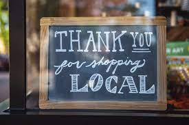

Our Mission
Online shopping has progressively become one of the most popular online activities worldwide, with retail e-commerce sales amounting to a staggering 4.28 trillion US dollars. However, even though people are buying more than ever, local businesses continue to struggle to connect with consumers.
When Covid hit and shut down brick and mortar locations this further accelerated this shift, but many attempted to shift their thinking to one of conscious consumerism, seeking to "do good" as they shopped. Shopping localling is one of the most common ways people do this, returning money back into the local economy, creating local demand, and potentially finding new and unique products they wouldn't have found otherwise.
Here at Shop 512 we hope to further facilitate this shift, keeping money local where it can have the most impact, and improving our communities. We hope to act as the epicenter of directing local business's online presence and making better informed decisions about where and how to shop here in the 512.
